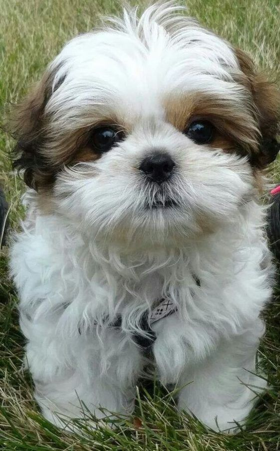

Shih-Tzu
The Shih Tzu, an affectionate and outgoing breed, boasts a distinct and engaging personality. Originating from Tibet, they were bred to be companions, making their temperament ideal for a variety of households.

Lifestyle and Time Commitment:
Shih Tzus are known for their affectionate and playful nature. They require daily exercise, grooming, and attention. While they are small dogs, they still need regular walks and playtime to stay healthy and happy.
Space and Living Arrangements:
Shih Tzus are well-suited to apartment living as they are small in size and don't require a lot of space. However, they do enjoy having access to a small outdoor area for short walks and potty breaks.
Costs:
Owning a Shih Tzu can be moderately expensive. In addition to the initial cost of purchasing or adopting a dog, owners should budget for food, grooming, veterinary care, training, and supplies. Shih Tzus have a long, flowing coat that requires regular grooming to prevent matting and keep them looking their best.
Breed and Size:
Shih Tzus are small dogs, typically weighing between 9-16 pounds. They have a distinct appearance with a long, flowing coat and a friendly, alert expression. They are known for their friendly and outgoing personalities, making them great companions for families and individuals alike..
Commitment and Responsibility:
Shih Tzus are loyal and loving dogs that form strong bonds with their owners. They require regular grooming, socialization, and training to ensure they are well-behaved and happy. Owners should be prepared to commit time and effort to meeting their Shih Tzu's needs throughout its life.
Colors:
- Gold
- White
- Black
- Liver
- Blue
- Brindle
- Silver